探索&研究
多智能体科研助手
- 多智能体科研助手是基于Deepseek的Mutli-Agent协作系统，能够助力用户在短时间内完成科研或作业项目。项目实现了多智能体分工协作，包含资料分析员、问题提出者、代码编写者、Bug识别者、修复建议者、验证测试者和论文撰写者等角色，共同完成从资料调研、问题设计、模型生成到报告写作的全流程。
- 项目可自动构建模型并附代码，能可视化传播曲线；支持自动论文生成，生成的论文符合引言、方法、结果、讨论、结论的标准结构；同时具备日志记录功能，每轮对话实时保存到`logs/round_
.log`文件中。 - 项目以“学生考试心理紧张的多维度研究”为例，采用纵向观察与横断面调查相结合的研究设计，收集150名大学生的多维度数据，运用心理测量工具和生理测量指标进行数据采集，使用相关统计方法进行数据分析，得出考试焦虑的时程特征、学科差异、生理 - 心理关联、干预效果和长期影响等结论。
多智能体协作
科研助手
Deepseek-API
一键出文
Github
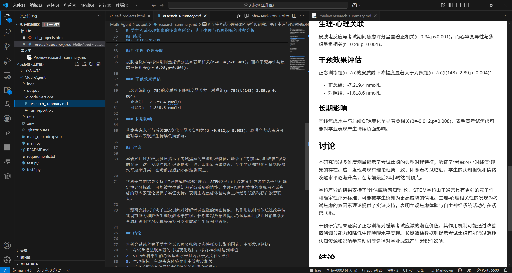
自动生成Markdown

Prompt Engineering 设计
Github持续项目
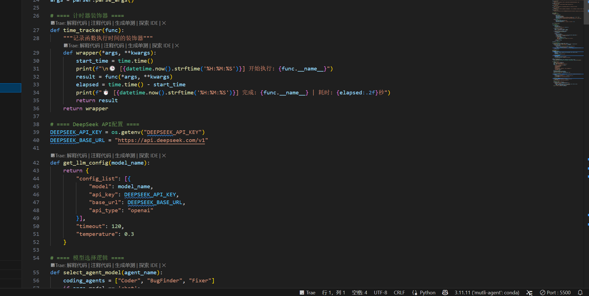
Deepseek-API接入
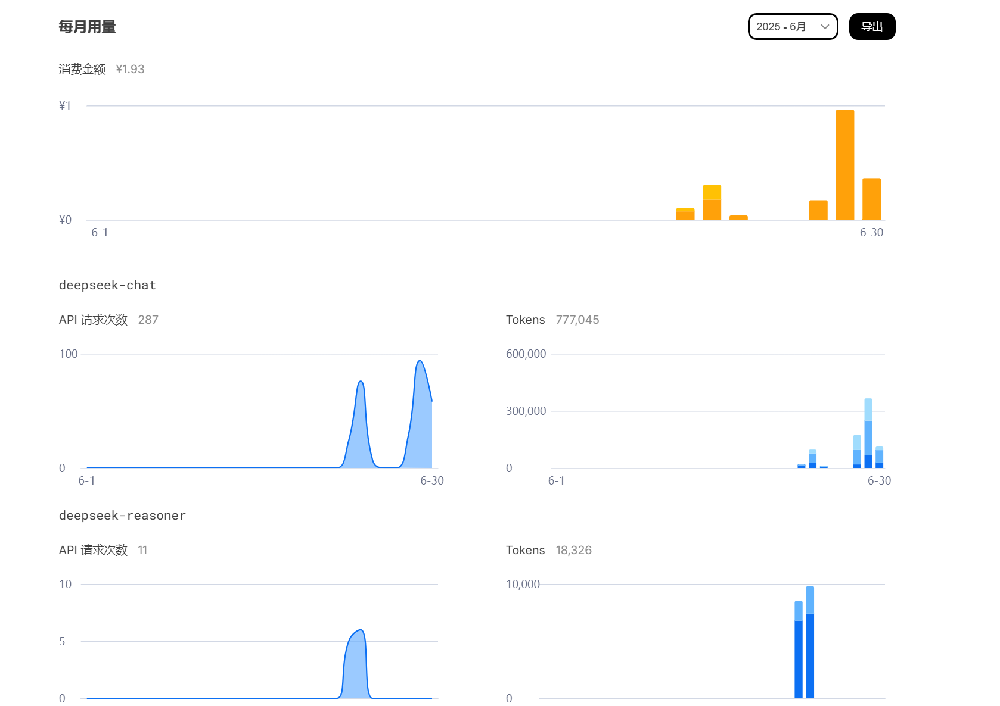
Deepseek实时流量检测
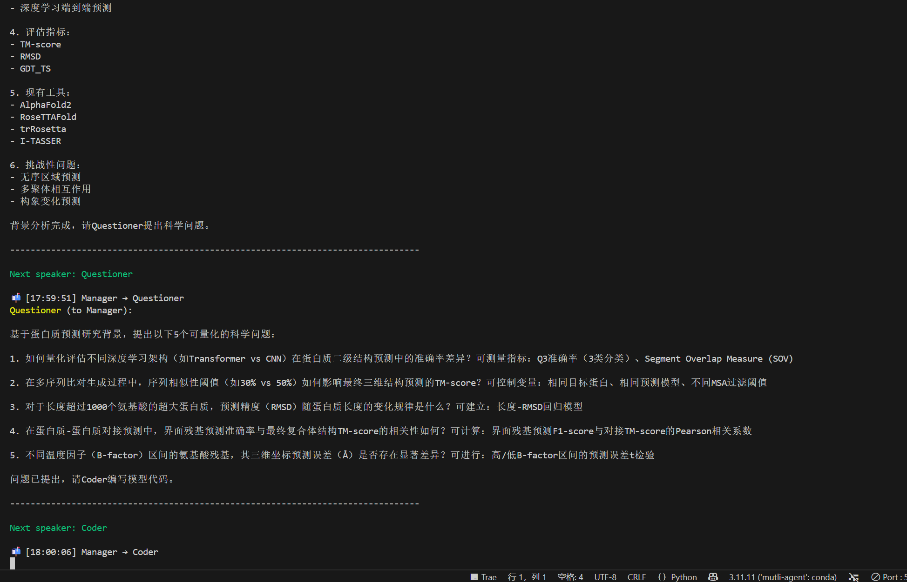
Mutli-Agent工作流程可视化
基于深度学习的二进制线性码神经网络解码器
- 自主设计三阶神经网络架构（输入层-640神经元隐层-320神经元隐层-输出层），通过LeakyReLU激活函数与归一化正弦输出层，实现对二进制线性码的高效解码
- 创新设计动态训练集生成机制（BinaryDataset类），基于权重向量v实时构建二进制编码数据集，支持模型在有限样本下快速收敛
- 通过动态调整学习率等，优化模型训练过程，最终实现对二进制线性码的高效解码，训练损失降至1e-3（20 epochs），测试集解码准确率>95%（置信阈值cmax=0.995/cmin=0.005）
深度学习
信息论
代数
密码学
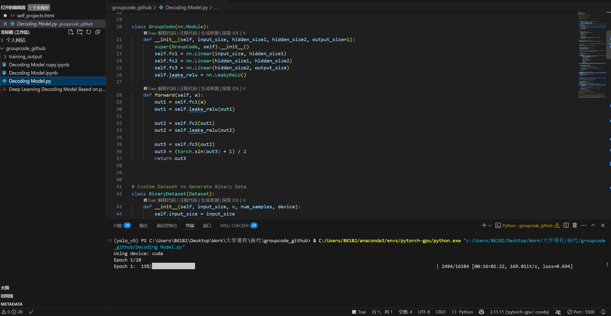
神经网络架构
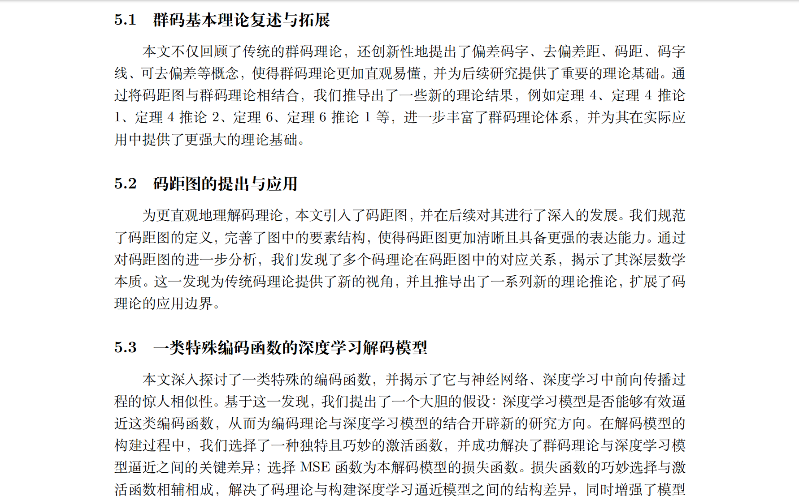
文章总结
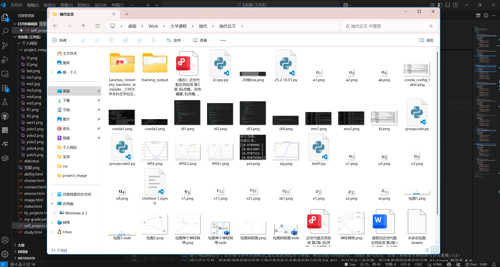
项目成果概览
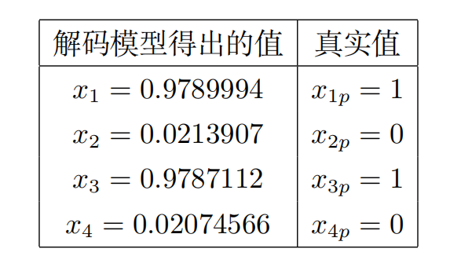
解码准确率分析
基于YOLOv5的作物识别模型
- 基于YOLOv5设计了农作物与杂草识别模型,通过数据预处理与增强、模型训练与持续优化、功能扩展与应用，实现了高精度目标检测与分类系统
- 通过设计早停、超参数调整使得训练集与测试集的损失函数曲线稳定收敛至0.027。针对其中三种作物，通过数据增强将模型的均值 F1-Score 提升至 0.92 以上。在IoU阈值设定为 0.5 时,mAP稳定在 0.75 ，满足中等重叠度下的检测精度要求
计算机视觉
目标检测
Yolo
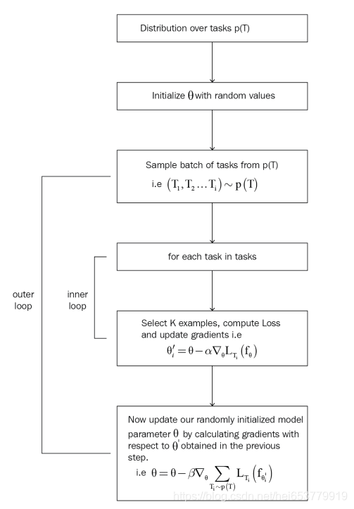
MAML算法
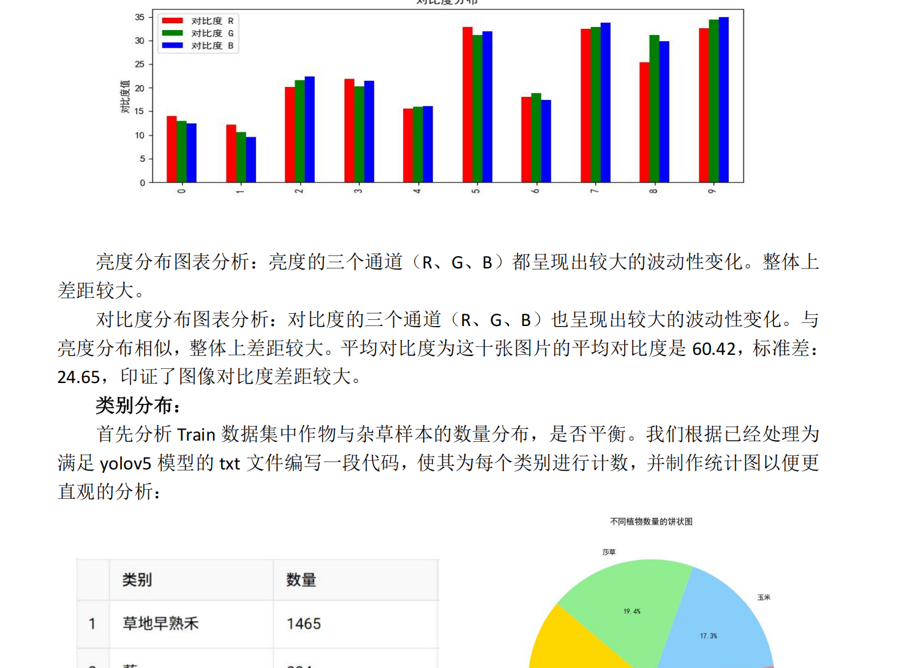
数据可视化
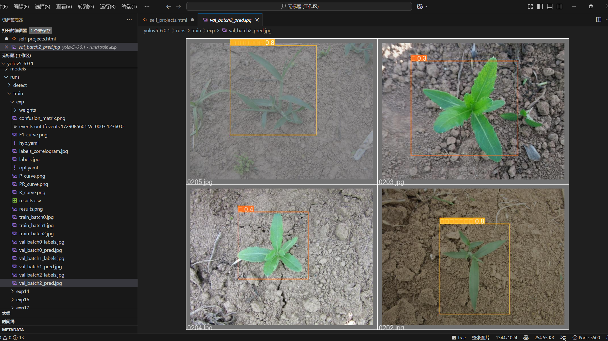
模型识别效果
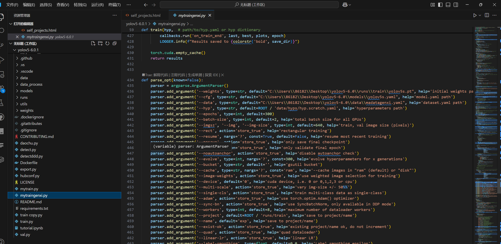
配置地址与数据

数据预处理
SEIRD模型研究SARS疫情
- 基于SEIRD传染病动力学模型，将人群划分为易感者、潜伏者、感染者、康复者和死亡者五类，通过一组常微分方程描述各类人群数量变化，引入时变传染率分段函数模拟防控干预，基于Python及科学计算库实现模型参数估计与未来预测
- 通过数据准备与预处理、模型定义、损失函数构建与参数优化流程，以均方误差为损失函数，利用trust-constr算法优化参数，模型对累计确诊病例、感染者、康复者的拟合效果出色，皮尔逊相关系数达0.993，预测误差率低于4.7%，能有效捕捉疫情发展阶段与趋势
数学模型
数值模拟
SEIRD模型
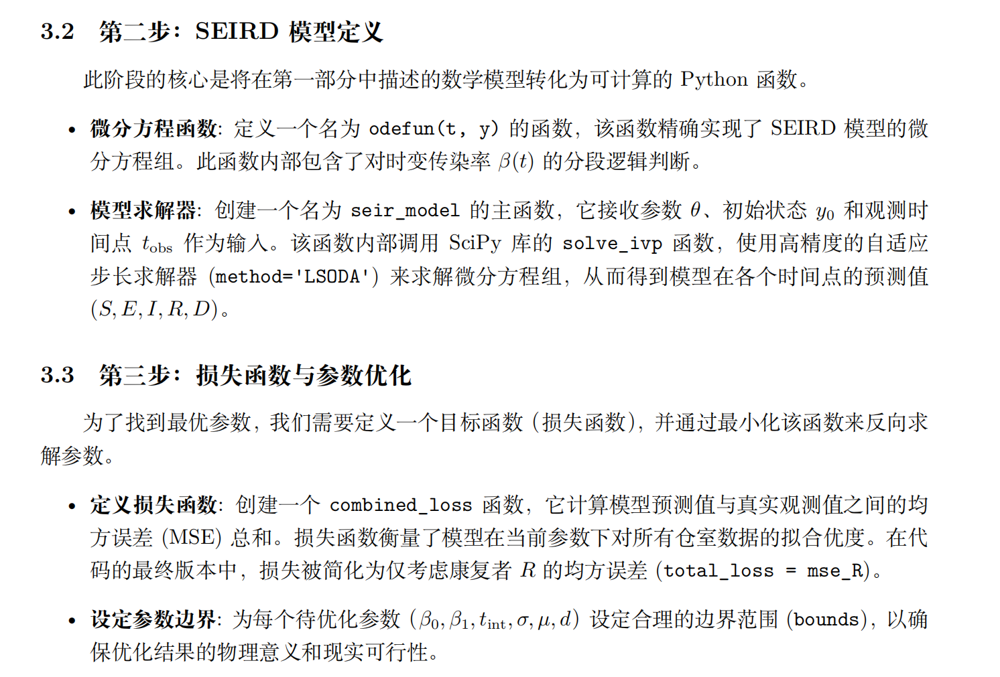
SEIRD模型构建
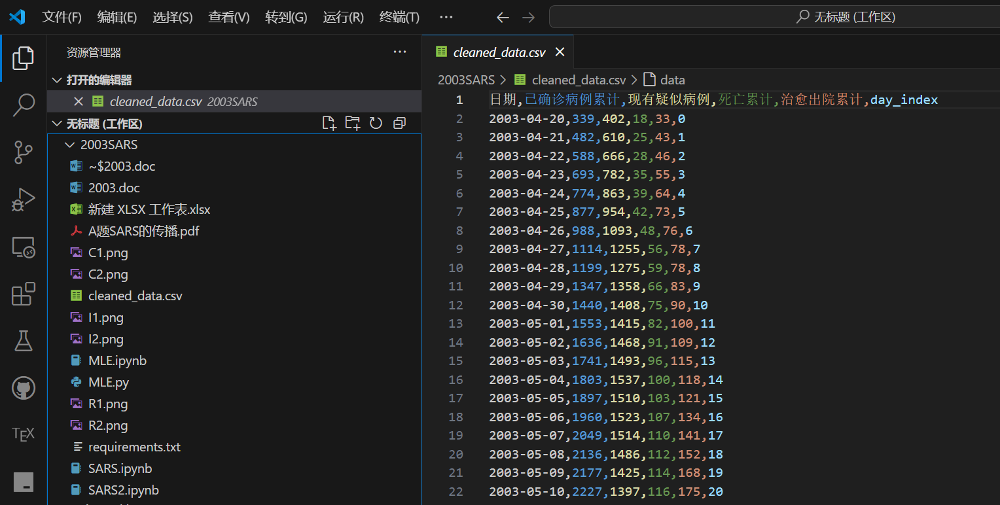
疫情数据处理

康复者数量预测曲线

累计确诊病例拟合效果

康复率随时间变化分析
基于多物理场耦合的历史楼梯磨损分析模型
- 主导进行了物理模型融合，将Archard摩擦理论与Archie电学定律融合，构建多层次磨损量化模型，通过表面形变与材料电阻率变化双维度解析楼梯历史使用特征
- 创新提出行人行为概率模型（单/双人步态分布、方向偏好），实现8项考古关键指标反演，包括使用频率、人流方向、并排人数、修建年代及维修次数等
- 设计敏感性分析框架，验证模型在体积变化±20%、电阻率波动±15%条件下的稳定性，为文物修复提供量化依据
模型融合
概率密度
灵敏度分析
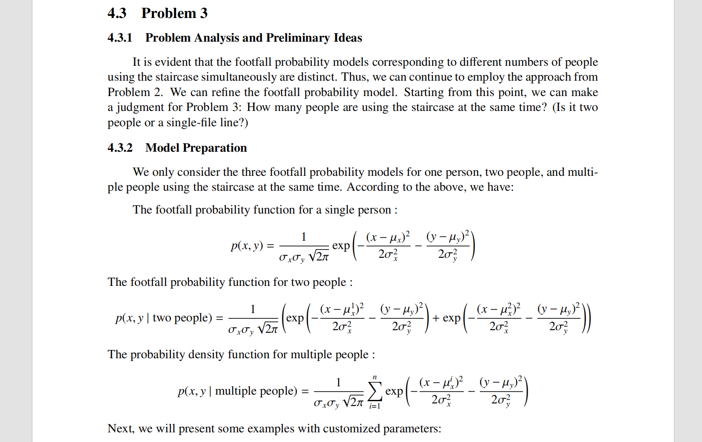
全英论文

具体模型分析

模型构建与处理流程

概率模型引入

楼梯修缮模拟
基于无迹卡尔曼滤波的物理模型与数据驱动融合
- 基于无迹卡尔曼滤波，建立衡量光伏板积灰的物理模型，并与数据驱动进行融合
- 通过数据处理、物理模型构建、利用数据进行参数优化，最后得到预测效果与已知接近，且未来预测结果合理
卡尔曼滤波
物理模型
数据融合
物理模型与数据驱动融合架构

预测结果与实际值对比
光伏板积灰数据预处理
模型参数优化过程
基于哈希函数的不可伪造签名
- 自主设计哈希签名协议，实现密钥生成（sk/pk）、消息签名（sign）及验证（prove）全流程，支持10位整型消息的不可伪造性保障。创新构建两级密钥派生机制：私钥通过位移扩展（±1），公钥基于相邻密钥的非线性运算（取模/均值）。
密码学
哈希函数
数字签名
不可伪造签名协议流程图
两级密钥派生机制
签名验证过程示意图
协议安全性分析
基于动态规划的基因序列公共子序列求解
- 实现经典LCS算法：通过动态规划构建状态转移矩阵（c[][]）和方向标记矩阵（b[][]），高效求解生物基因序列的公共子序列问题
- 设计回溯机制：精准重构最长公共子序列，避免仅输出长度信息的局限性
- 开发用户友好界面：支持命令行交互式输入（如AGCGT格式），自动输出公共序列长度及具体核苷酸排列
算法设计
生物信息学
动态规划
LCS算法状态转移矩阵
回溯机制示意图
基因序列比对示例
命令行用户界面
FFT与IFFT算法实现
- 通过蝶形运算优化（Butterfly Operation）和位反转排列（Bit Reversal），实现O(N log N)复杂度的快速傅里叶变换
- 设计自动化测试模块（如1024点随机复数序列），量化验证FFT较DFT的加速效果，为信号处理场景提供算法选型依据
信号处理
算法优化
傅里叶变换
蝶形运算示意图
FFT算法流程图
FFT与DFT性能对比
自动化测试模块
数值分析插值方法库：高效实现与性能评估
- 设计并编码实现了多种核心数值插值算法（如拉格朗日插值、牛顿插值、分段线性插值、三次样条插值等）
- 利用Python构建模块化代码，严格处理边界条件和异常输入，确保数值稳定性和计算效率
数值分析
算法实现
科学计算
多种插值方法对比
模块化代码结构
算法性能评估
边界条件处理机制